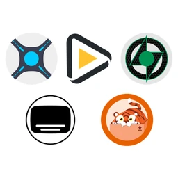

01
Tes séries toujours à jour
Tu ajoutes une série dans Sonarr : il récupère les saisons déjà sorties, puis chaque nouvel épisode le jour de sa diffusion, et le range dans le bon dossier de saison.
Sonarr→Nouvel épisode→Jellyfin

Sonarr, Radarr, Lidarr, Bazarr et Prowlarr : cinq outils open source qui gardent ta médiathèque à jour toute seule. Tu ajoutes une série ou un film, ils s'occupent du reste : récupération, tri, renommage, sous-titres.

Les arrs sont une famille d'outils open source, développés par des bénévoles, qui automatisent ta médiathèque. Sonarr gère tes séries, Radarr tes films, Lidarr ta musique, Bazarr les sous-titres (pour Sonarr et Radarr), et Prowlarr centralise tes sources (indexeurs) et les transmet aux autres. Tu ajoutes un titre une fois : l'outil le surveille, récupère chaque nouvel épisode depuis les sources que tu as configurées, le passe à ton logiciel de téléchargement, puis le range, le renomme proprement et prévient ton lecteur (Jellyfin, vidéo n°05, Plex ou Emby). Important : les arrs ne fournissent aucun contenu. Ils ont besoin d'un logiciel de téléchargement (qBittorrent, SABnzbd, NZBGet…) et de sources (indexeurs Usenet ou torrent) que tu choisis toi-même. Readarr, l'outil prévu pour les livres, a été arrêté et archivé en juin 2025 : il n'est pas présenté ici.
Avec Container Manager (Synology) ou Container Station (QNAP), lance les images LinuxServer : lscr.io/linuxserver/sonarr, radarr, lidarr, bazarr et prowlarr. Ports par défaut : Sonarr 8989, Radarr 7878, Lidarr 8686, Prowlarr 9696, Bazarr 6767. Mets tous les conteneurs et ton logiciel de téléchargement sur le même dossier partagé (ex. /data) pour que les fichiers soient déplacés sans copie.
RecommandéLes images Docker existent pour ARM64 : un Raspberry Pi 4 ou 5 avec un disque USB suffit pour Sonarr, Radarr et Prowlarr. Un docker-compose.yml regroupe tous les outils en un seul fichier ; les guides TRaSH (trash-guides.info) donnent une structure de dossiers éprouvée.
Petit budgetSonarr, Radarr, Lidarr et Prowlarr ont des installeurs pour Windows et macOS, et des paquets pour Linux ; Bazarr s'installe avec Python. Pratique pour tester, mais le PC doit rester allumé pour que tout se fasse tout seul.
Pour testerTu ajoutes une série dans Sonarr : il récupère les saisons déjà sorties, puis chaque nouvel épisode le jour de sa diffusion, et le range dans le bon dossier de saison.
Radarr surveille les films de ta liste et les sorties à venir, choisit la qualité que tu veux (1080p, 4K…) et peut remplacer un fichier par une meilleure version.
Bazarr cherche automatiquement les sous-titres manquants dans les langues que tu choisis pour chaque film et chaque épisode, et les place à côté du fichier.
Lidarr suit tes artistes, repère leurs nouveaux albums et range ta bibliothèque musicale proprement (artiste, album, piste), prête pour Navidrome, Jellyfin ou Plexamp.
Prowlarr gère tes indexeurs une seule fois et les envoie à Sonarr, Radarr et Lidarr : plus besoin de les configurer dans chaque outil.
Sonarr est né en 2011 sous le nom de NzbDrone ; Radarr en est une copie pour les films (2016), puis sont venus Lidarr (2017), Bazarr (2017) et Prowlarr (2020). Le 19 novembre 2026, les cinq dépôts cumulent plus de 50 000 étoiles sur GitHub (Sonarr ~17 800, Radarr ~14 800, Prowlarr ~7 600, Lidarr ~5 800, Bazarr ~4 400), et tous ont reçu des modifications cette semaine. Les guides TRaSH, écrits par la communauté, sont la référence pour bien les configurer.
Les cinq dépôts ont reçu des modifications entre le 17 et le 19 novembre 2026, avec des versions publiées régulièrement.
Plus de 50 000 étoiles cumulées, des milliers de forks, un wiki officiel, un Discord actif et les guides TRaSH.
Tout tourne chez toi, sans compte ; seuls des services de métadonnées et tes propres sources sont interrogés.
Licence GPL-3.0, gratuits, financés par des dons (Open Collective). Portés par des bénévoles : Readarr a été arrêté en 2025, faute de temps pour réparer ses métadonnées.
Plus de dix ans pour Sonarr et très stables, mais la première installation demande de la rigueur (chemins, droits, logiciel de téléchargement).
Comment on note : 5 critères notés sur 5, vérifiés sur GitHub (dépôts Sonarr, Radarr, Lidarr, Prowlarr, Bazarr et Readarr) et sur le wiki Servarr le 19 novembre 2026. La note sur 10 est la moyenne ramenée sur 10.
Bon pour : Une médiathèque perso qui se range et se met à jour toute seule
Bon pour : Les séries uniquement, avec une alternative plus ancienne à Sonarr
Bon pour : Ses séries et films exclusifs, sans rien installer
Bon pour : Si tu es déjà abonné à Amazon Prime
Bon pour : Disney, Pixar, Marvel, Star Wars
Les arrs ne remplacent pas un catalogue : ils organisent ce que tu récupères. Télécharger des œuvres protégées sans autorisation est illégal.

Chaque vidéo RepoPop t'explique un dépôt GitHub utile en moins d'une minute, avec son kit comme celui-ci.